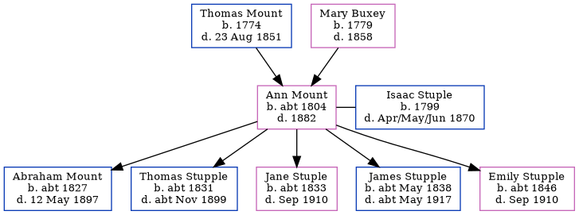

Ann Stuple (née Mount) c1804 - 1882
[ Home ] | [ Calendar ] | [ Surnames Index ] | [ Census Index ] | [ Family History ]The child of Thomas Mount (an agricultural laborer) and Mary Buxey, Ann Mount, the 3 times great-grandmother of Nigel Horne, was born in Sturry, Kent, England c. 18041,2,3,4,5 and married Isaac Stuple (with whom she had 5 children: Abraham, Thomas, Jane, James and Emily) in Herne, Kent, England on Oct 13, 1830.
During her life, she was living in Herne in 18511, in 18612 and in 18713; and Blean Union Workhouse in Herne on Apr 3, 18814 which is where she died in 18825 (oct/Nov/Dec).
Parents
- Thomas was born in 1774
- Mary Elizabeth was born in 1779
Children
- Abraham was born c. 1827
- Thomas was born c. 1831
- Jane was born c. 1833
- James was born c. May 1838
- Emily was born c. 1846
Citations
- 1851 England Census Online publication - Provo, UT, USA: The Generations Network, Inc., 2005.Original data - Census Returns of England and Wales, 1851. Kew, Surrey, England: The National Archives of the UK (TNA): Public Record Office (PRO), 1851. Data imaged from the National
- 1861 England Census Online publication - Provo, UT, USA: The Generations Network, Inc., 2005.Original data - Census Returns of England and Wales, 1861. Kew, Surrey, England: The National Archives of the UK (TNA): Public Record Office (PRO), 1861. Data imaged from the National
- 1871 England Census Online publication - Provo, UT, USA: The Generations Network, Inc., 2004.Original data - Census Returns of England and Wales, 1871. Kew, Surrey, England: The National Archives of the UK (TNA): Public Record Office (PRO), 1871. Data imaged from the National
- 1881 England Census Online publication - Provo, UT, USA: The Generations Network, Inc., 2004. 1881 British Isles Census Index provided by The Church of Jesus Christ of Latter-day Saints © Copyright 1999 Intellectual Reserve, Inc. All rights reserved. All use is subject to the
- England & Wales, FreeBMD Death Index: 1837-1915 Online publication - Provo, UT, USA: The Generations Network, Inc., 2006.Original data - General Register Office. England and Wales Civil Registration Indexes. London, England: General Register Office. © Crown copyright. Published by permission of the Cont
Family Tree
Generated by ged2site. Last updated on Jun 11, 2024